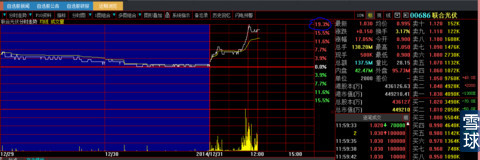
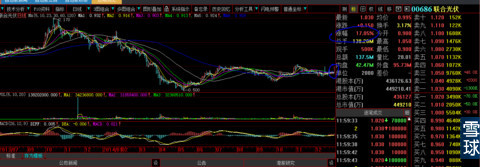

展望2015年，光伏电站系列题材不会是唯一但一定会是最重要市场炒作主题之一，所谓主题展望，并非就是明天要如何如何（白马股可能很快很快就会开始，也许真的就是明天，有心人一定会找到它们是谁。名词解释：白马股就是业绩优秀行业龙头今天的股价与其业绩、流通盘子相比绝对低廉，就如同600352浙江龙盛股价在14元附近时无论我怎么叫喊就是没有人相信，又如000525“红太阳”被大牛扮猪所迷惑，明牌不打偏打暗牌），目前该板块题材股大多个股都还在中继下降通道之中，个股甚至还有年报地雷。
记得2014年初，停顿近2年的高铁投资项目发改委一个月比一个月批出来的多，累计到2014年中，明明白白的公告累计已经过万亿以上，但是市场视所有这些利好如无物，有关高铁交通建设上下游股票，对这些所有的利好已经完全麻木，该跌照样下跌，就如同狂涨中的券商对所有的利空视而不见，该涨照样狂涨。这些特征在A股历史上已经反复上演无数次，历史总是被参与者选择项遗忘。
2014年1—3月，有关高铁小股票就已经被高铁投资重启信息刺激开始有所炒作（记不得那些小股票名字了），直到7月以后才开始有中盘股票“两晋”演绎牛股行情（晋西车轴、晋亿实业），只到9月主力才开始悄悄对大股票建仓直至12月中国中铁、中国交建、中国铁建、中国建筑、中铁二局、还没有开盘的“中国南北车”等等，开启了波澜壮阔的大行情，把11月初人们脑袋想破都不可能认知的这些超级大盘股爆炒得比创业板小盘更加酣畅淋漓。有心人稍微搜寻一点有关高铁重启投资政策、投资力度、规模、时间顺序就会发现，这么大的板块行情怎么可能是直到2014年11月末才有信息来源？用厚积而薄发形容最恰当不过，最大的机会往往被人们熟视无睹。
你们去稍微检索一下2014年9月以后，国务院、国家能源局、发改委对光伏电站的扶持政策无论力度（绝对空前）、规模（规模大到你无法想象）、迫切（一个月比一个月任务压力大）、优惠（没有任何一个行业有如此明确、细致、具体的优惠政策落实，对光伏电站无条件发电上网扫除利益集团障碍、分布式发电并网的支持力度、光伏发电上网电价1元1度（比民用电价还高的多）、持久性（补贴20年不变）、媒体不时报道单一企业集团投资计划达1000亿元规模。
百度一下嘛，还有比赚钱而乐意辛苦的事情吗？人笨没有错那是天生的，但是人懒还固执己见就是你的不对了（我又不是神仙，怎么可能会预知券商行情？还不是从9月开始国家对证券市场、证券行业前所未有的频繁发布震撼性利好的政策所惊醒？才敢于10月在这里放话：等到11月再看券商行情会让市场大跌眼镜）。看看这些国家意志的光伏电站政策比高铁支持的力度是小还是更大、更持久、更有后劲？就像某些城市高利贷到最后全民卷入一样，我猜进入2016年后人们打招呼的方式就是：你投资光伏电站了吗？就像上个月开始，相互打招呼就是：你买了券商股了吗？
投资的秘诀之一是投资未来，社会发展的综合受益方向就是我们人类未来为之奋斗的方向，这种前瞻性永远不会过时，失败的主因是受到天时地利人和不能和谐一致的障碍，例如2000年的纳斯达克网络股灾也没有阻挡今天网络科技的繁荣与发展，前期死在沙滩上前瞻性投资客越多，后期会掀起更高的繁荣浪潮。当天时、地利、人和的交叉发生共振之时才是投资的最佳时期，记得这是2001年李嘉诚回复媒体为何要在网络已经崩盘情景下才开始投资网络科技时候的发言大意（原话肯定不是这样的啦，你百度不到的）。光伏电站题材会至少贯穿2015整年并向2016年延展，时间越是延后，行情会越是火爆。预计市场刚开始时，可能只是有光伏电站内涵的小盘成长个股价格炒作，例如：601222林洋电子、600401海润光伏、300317珈伟股份、002610爱康科技、600089特变电工、002309中利科技，待它们的绝对价格分别炒得很高到40、60甚至80以上时，财富效应的榜样力量就会星火燎原，最终前期光伏电站概念小盘个股炒作的财富效应会导致光伏电站上下游行业股票的全面爆发。看看券商股炒作过程就明白什么是循环渐进的财富效应，榜样的力量是多么强大，后知后觉的场外资金涌入拦都拦不住。2014年1月，如果有人说券商板块会是2014年最火爆题材，你可能会大声呸他一脸口水。
让我们用2015年整年时间去验证，首先需要改变的是自己被过往信息所固化的成见观念：光伏产能严重过剩、成本过高、技术有待突破、欧美反倾销等等。经过多年罕见最严酷行业打击之后，无论技术、成本、效益、市场反倾销隔离等等今非昔比、物是人非，能够存活下来并有所发展的光伏企业就是未来行业翘首与最大赢家，就如同2000年后存活下来的互联网企业一样：一将功成万骨枯。记得我9月自选加入3元附近股价的600428中远航运、601919中国远洋的时候，不是照样那么多人质疑：你怎么会看上这样的垃圾股？我的回复是：你怎么不去看看“波罗的海运价指数”涨了多少倍？
1、光伏原材料以及制造。这个板块会是第二梯队，光伏电站建设规模如此之大，原材料和组件制造行业会是最先受益行业且销售收款及时，必然效益增幅惊人，利润绝对额可能平均到每股收益并不高，但是利润同比与环比增幅翻倍再翻倍的巨大，由于之前行业低谷，股价也就被打得很低廉，要记住一句老话：牛股都是从低价股中产生的，最好在股价低于7元以下里面去找，没有低于7元的，等他跌到7元以下（我就看到好几只这样的标的股）！
2、光伏电站EPC：预计这个群体会首先走出来，因为一座光伏电站的建设周期在没有等待政府批文等羁绊下，半年足矣。所以这些企业效益立竿见影来的快，直接反应在2015年的各个季度利润表报表里，利润环比会一个季度比一个季度大幅提升，行业调研报告的动态分析（非静态）会不断更新；
3、光伏储能概念个股：这个里面会出最大牛股，第一、技术有突破，储能转换效率已经从成熟的10%跨越式发展到30%（看看瑞士（也可能是瑞典，记忆有些模糊）有关储能转换效率技术突破报告甚至突破到60%），使储能效率转换有了巨大商业价值，第二、移动光伏电池最大的技术难题就是如何储能与转换效率（与石墨烯有关），难题越大，商业价值越高。我前几天还看到一辆光伏太阳能概念汽车非常震撼报告，我都开始怀疑现在如火如荼的新能源汽车会不会像“四川长虹”一样，新技术项目还在建设周期中，更新的电视技术已经横空出世，淘汰了那么大一个电视制造行业老大。
4、光伏电站投资：一次性投资很大，回收期很长，国家会出很多金融政策创新与之匹配，因此必然能够实现短期变现，循环投资，由此，未来3年利润都会很惊人。
5、光伏电站投资的金融杠杆：投资光伏电站，虽然只有电站建成后才可以抵押贷款融资，没有商业银行敢于伴随建设初期就同期贷款融资介入以及上级行允许介入，目前我只看到国家开发银行对600401海润光伏的个案40亿元本金得到200亿元贷款授信，不过我坚信在光伏电站项目数千亿资本金跑步进场前赴后继的跑马圈地抢入运动中，贷款融资一定会蔓延到其他银行，并很快会把在手电站用金融创新打包成理财产品手段快速变现，把未来20年收益折让后，集中在3—5年体现与实现，当它的价格跌破7元后，就是绝佳买入点（600644乐山电力是否选入一直被它所谓子公司参与一个破产公司牵连所犹豫，图形又是那么坚定的吸引我，难啦！）。
有人会想：现在油价、煤炭价格这么低，谁知道明年原油价格是会跌到50美元还是40亦或30美元？怎么可能光伏电站题材会爆发？是的，你是这样想的，猪也是这样想的。当2016年油价再次挑战100以上—120美元/桶的时候，你就知道什么叫历史与见识、傲慢与偏见。
现在还有的是时间，各自可以从各个角度学习、寻找最佳投资标的。
只要提前有心理准备，就不怕任何踏空。在市场调整期间是最好的寻找目标、等待最佳买入时机。
追记：下图是2014年12月31日港股00686联合光伏分时图和K线位置图。


 |
2015年的主战场：光伏电站炒的是心 2014-12-24 15:10:07 |
Copyright © 1996-2014 SINA Corporation All Rights Reserved.